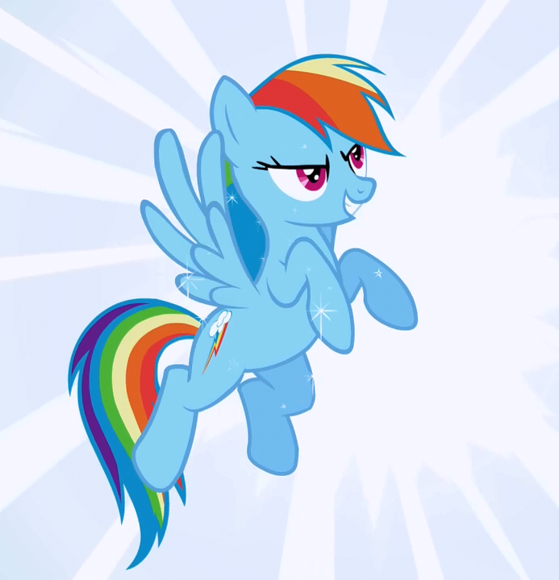

Origns
My little pony is a t.v show. My Little Pony is an entertainment franchise developed by Hasbro, originally as a toy line for girls. The first toys were developed by Bonnie Zacherle, Charles Muenchinger, and Steve D'Aguanno, and were produced in 1981
Animator and writer Lauren Faust approached Hasbro, seeking to develop her girls' toys property "Galaxy Girls" into an animated series. Hasbro, Inc. has produced several incarnations and lines of toys and entertainment related to the My Little Pony franchise, often labeled by collectors as "generations". The animated series My Little Pony Tales which premiered in 1992 was the toy line's most recent television series before Friendship Is Magic, featuring the pony designs of the first toy line. Faust was initially hired by Hasbro to create a pitch bible for the show, allowing her to get additional help with conceptualization. Faust said she was "extremely skeptical" about taking the job at first because she had always found shows based on girls' toys to be boring and unrelatable. My Little Pony was one of her favorite childhood toys, but she was disappointed that her imagination at the time was nothing like the animated shows, in which the characters, according to Faust, "just had endless tea parties, giggled over nothing and defeated villains by either sharing with them or crying". With the chance to work on My Little Pony, she hoped to prove that "cartoons for girls don't have to be a puddle of smooshy, cutesy-wootsy, goody-two-shoeness Orginal Source
Twilight Sparkle is the student of Princess Celestia. She is a female unicorn pony who transforms into an Alicorn and becomes a princess. She has one sibling, her bigger brother Shining Armor. Shining Armor is married to Princess Cadence and they have a foal, whom they named, Flurry Heart. Twilight in the beginning of the series isn't interesting in anything except books and studying. When the summer sun celebration came around Twilight was worried about the myth from olden pony times. The Mare in the moon, also known as, Nightmare Moon a powerfull princess that wanted to rule equestria and inprisioned in the moon for a thousand years. On the longest day of the thousandth year the stars were to aid her in her escape. She was about to return to equestria and bring with her eternal night Her mentor Princess Celestia tells her it an old pony tail and she wants her to go to Ponyville and supervise for the prepartations of the Summer Sun Celebration. Princess Celestia also mentions Twilight making friends. In the end she defeats Nightmare moon by using something Twilight would never want. Friends and the magic of friendship. Twilight frees Nightmare Moon becoming, who she once was Princess Luna, Princess Celestia's little sister. Twilight learns that friendship is one of the most powerful sources of magic. She wants to study it and stay with her new friends in Ponyville
We meet Apple Jack when Twilight goes to the first preparation. Banquet preparations the location, Sweet Apple Acres. This is where the Apple family lives. Applejack lives with her Granny, Granny Smith, Big Mac (or Big Machintosh), her big brother, and Apple Bloom, he little sister. Applejack is a brave, reliable, strong, mature, and hard-working pony, although headstrong about doing things on her own. Applejack speaks with a Southern American accent, a thick southern drawl, similar to the accent of the southwestern Missouri and Oklahoma Ozarks, where there is a great number of apple orchards. She almost always wears a light brown stetson hat, which she usually removes before sleeping. A lot of the fandom believe that Applejack's father, Bright Mac, gave her the hat. Applejack is occasionally very stubborn and inflexible, causing her to be hostile toward others or incapable of seeing alternate solutions to a problem. Applejack is often shown to be one of the more empathetic of the main cast, putting the needs, feelings of others before hers. Applejack represents the element of honesty.

We meet Rainbow Dash next. She is supposed to be keeping the sky clear for the Summer Sun Celebration. She is the pegasus that every pegasus foal looks up to. She maintains the weather and clears the skies in Ponyville. Ever since she was a foal she has been obsessed with The Wonderbolts, an elite flying group, she has wanted to be one ever since she was a foal. She is now a wonderbolt. She represents the element of loyalty. She technically doesn't have any siblings but the fandom considers the foal Scootaloo as her little sister. Her mom and dad are Windy Whistles and Bo Hothoof. Rainbow Dash manages the weather in Ponyville. Keeping the skies free of clouds, unless the weekly rainfall is scheduled for that day of course, makes sure that Ponyville has nice weather. Rainbow Dash is very brash, mischievous, and competitive. She has many likes and loves. One love of hers is reading. When she fisrt started reading she thought it was going to be stupid and boring, but she read Daring Do and the quest for the sapphire statue and fell in love with the Daring Do series. She loves the Apple Family's Apple Cider, she isn't a big fan of pie but will eat it for compitions. She love flying the most. She is well known by many to be the only pony to be able to pull off a Sonic Rainboom.
Next we meet Rarty. She is incharge of decorations for the Summer Sun Celebration. She is probably the most fashion forward in Equestria. She is always sewing dressed for customers and her very best friends. Rairty represents the element of genorosity and is all ways there for her friends when they need her the most. She dreams of being the most popular fashionista in all of Equestria. Rairty's parents are Hondo Flanks who is also known as Magnum and Cookie Crumbles, also known as Betty Bouffant. Rairty has one sibling a little sister, whos name is Sweetie Belle. Rarity prefers to be the center of attention. She is a mssive drama queen and hates mud. She calls mud and anything that can ruin her beautiful white coat "uncoot." Although Rarity may seem like one of those ponies that lets every pony else to the work, she is far from that. During the battle of canterlot, during the wedding for Princess Cadence and Shining Armor vs. the Changlings Rarity shows that she has power, she punches a changeling as if she knows martial arts. Rairty is also known by many, more stallions than mares, for her feminine charms.
Next we meet Fluttershy. She represents the element of Kindness. She is known for being shy, kind, empathetic and caring especially towards her animal friends. Fluttershy is very good with small creatures. She can comminicate with animals on a whole nother level compared to other ponies. Flutters is scared very easily. She may have the word "Shy" in her name but she can be so much more. Get on Fluttershys bad side and she goes completly crazy. She can be very assertive but also a door mat at the same time. Fluttershy on rare occasions can flip her lid and completly loose it. She will go "momma bear" on you. Fluttershy has one very special skill that no pony else has. She has The Stare. The stare has the ability to "control" misbehaving animals. Althought she hides it she has incredible sewing abilities. She loves to sing, as long as she is alone or can't see others that are listening to her. Fluttershy's parents names are not offically known but everyone in the fandom just calls them Mr. Shy and Mrs. Shy. Fluttershy has one sibling Zephyr Breeze.
Finally we meet Pinkie pie. In a library that is supposed to be quiet throwing a party for the new arival in ponyvile Twilight. Pinkie Pie represents the element of laughter. She is very childish. She is known for her parties and (to the fandom for breaking the forth wall). Pinkie Pie has some insecurities like when she thinks something really dumb like if her friends don't like her and don't want to go to her parties anymore. Pinkie Pie can play up to 30 instruments at the same time. Pinkie pie works at Sugar cube corner and bakes a lot of sweet treats. She has a weird thing going on in her body that she calls Pinkie sense. Pinkie Sense is when weird things happen to her body that mean specific things. For example twitchy tail means something is gonna fall, from either the sky or into a hole. Pinkie has 3 siblings. Maud Pie, Marble Pie and Limestone pie. Her parents are Igneous Pie and Cloudy Quartz. Pinkie pie has one pride, the pinkie promise. Cross my heart and hope to fly, stick a cupcake in my eye. If anypony makes a pinkie promise and then breaks it they better run for their lives.